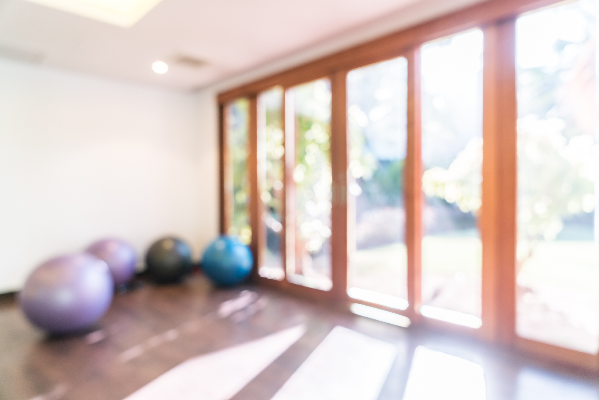
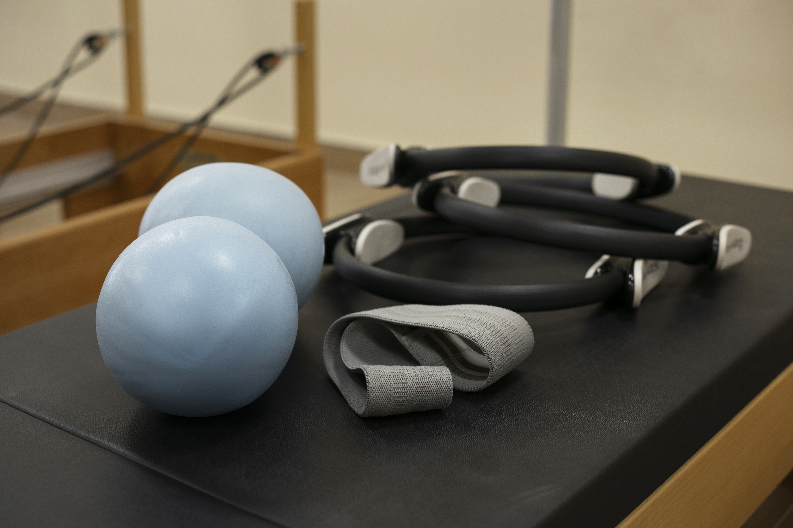
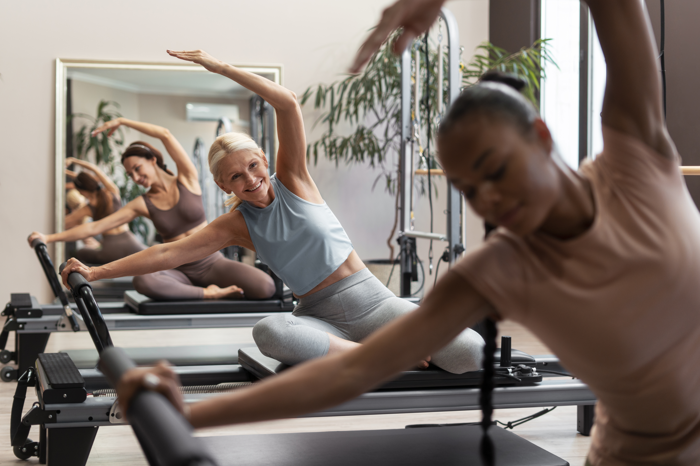

Dr. Rafael
Comprometido com a excelência, alia conhecimento técnico e empatia para proporcionar um cuidado de qualidade a cada paciente.

Dra. Mariana
Profissional dedicada e em constante aperfeiçoamento, busca sempre oferecer o melhor atendimento e resultados aos seus pacientes.
Como chegamos aqui
História do studio
Meu nome é Mariana e sou fisioterapeuta formada pela Universidade Federal de Uberlândia (UFU). A jornada com o Pilates começou em 2022, quando fiz minha primeira certificação ainda durante a graduação, e iniciei as aulas um ano depois. Ao concluir a faculdade e já atuando na área, percebi o grande potencial de conciliar uma renda extra com a paixão pelo trabalho.

O ponto de virada foi a estrutura de remuneração que encontrei: eu recebia apenas 40% da receita gerada, ficando 60% com a proprietária. Isso me fez questionar o valor do meu trabalho e da minha mão de obra. Compartilhei essa reflexão com meu namorado. Após muita consideração e planejamento, tomamos a decisão de empreender (já que eu e meu namorado somos fisioterapeutas e sócios).

O primeiro passo foi a aquisição dos materiais e a busca por um local para alugar. Após pesquisas e validação da demanda em grupos de Pilates, definimos o bairro ideal para o nosso estúdio. Em seguida, dedicamos-nos à parte burocrática – formalização como pessoa física na prefeitura, pagamento de taxas, regularização junto ao conselho – e à compra de itens essenciais.

Trabalhei ativamente no estúdio por seis meses até atingirmos um capital de giro seguro. Esse marco nos permitiu contratar outra instrutora para assumir meu turno e expandir a operação. Atualmente, o estúdio já conta com instrutoras adicionais no turno da manhã, todas operando sob um modelo de parceria de 40%.